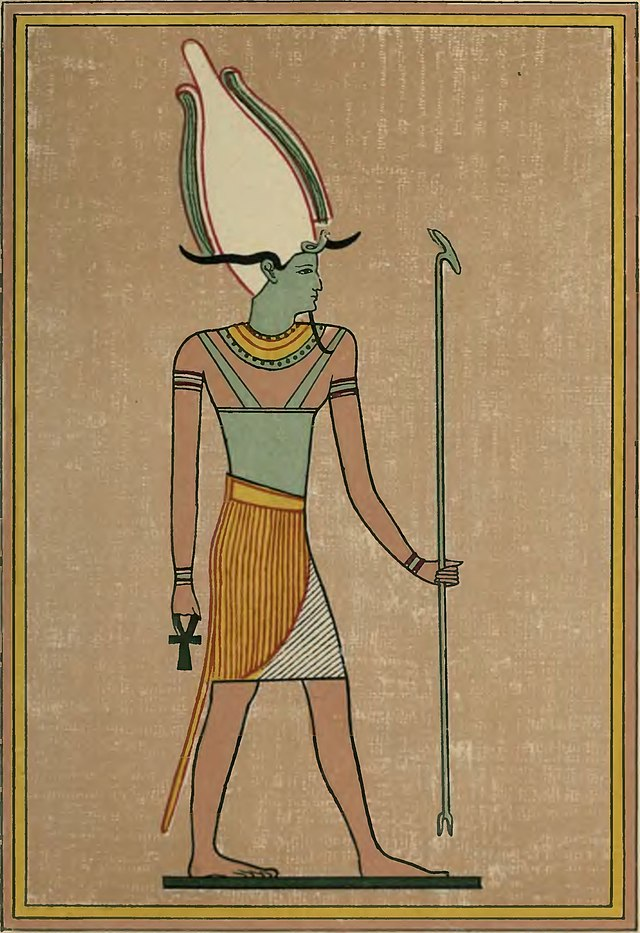

A mitologia egípcia reúne diversos mitos, lendas e histórias que fizeram parte do imaginário religioso no Egito Antigo até a chegada do Cristianismo.
Lembre-se que na Antiguidade a religião egípcia era baseada no politeísmo, ou seja, o culto a vários deuses que ocorriam geralmente nos templos dedicados a eles.
Os deuses egípcios eram na sua maioria antropomórficos,mistura de animal com humano, mas também havia deuses zoomórficos, em forma de animais. Os deuses ou os princípios cósmicos eram chamados de Neteru os quais foram divididos em:
São os deuses mais importantes os quais estão associados com o mito de criação (origem do universo):
Ele remonta ao período do Novo Império. Seus textos foram produzidos em rolos de papiro, os quais eram envolvidos em pedaços do material de que eram elaboradas as múmias. As versões mais sofisticadas eram compostas de ricos ornamentos tipográficos, conhecidos como vinhetas.
Este livro continha principalmente preceitos mágicos e ladainhas que versavam sobre o destino dos que morreram. Ele orientava as pessoas quanto aos caminhos a seguir para se atingir o reino de Osíris – a principal divindade cultuada pelos egípcios, símbolo do renascimento da alma, de sua imortalidade -, os campos da bem-aventurança. Ao obedecer às instruções contidas neste sagrado manual, o Homem tinha condições de atingir um estágio elevado que o habilitava a se tornar um Espírito Santificado
Os egípcios, que adotavam o Politeísmo, ou seja, o culto de vários deuses, encontravam neste Livro uma relação das adversidades com as quais se deparariam ao chegar no mundo espiritual, e nele poderiam também descobrir os vários recursos necessários para triunfar sobre estes obstáculos. Este conflito é muitas vezes encenado no próprio instante do enterro, revelando - nesta reprodução da luta entre o bem e o mal -, o quanto é importante o processo descrito no Livro dos Mortos.
É patente também neste Livro a crença dos egípcios na imortalidade da alma e na fé em uma vida futura no mundo espiritual, bem como na reencarnação, que propicia ao Homem renascer na Terra para a aquisição de novos valores e para a obtenção de renovadas experiências.
Ammut: Também conhecida como "Devoradora de Almas", é uma criatura com a cabeça de crocodilo, o corpo de leão e as pernas de hipopótamo. Ela é responsável por julgar as almas dos mortos no tribunal de Osíris.
Serpente Apófis: Também chamada de Apep, era uma serpente gigante que representava o caos e tentava devorar o sol todas as noites durante a travessia pelo submundo.
Bennu: É uma ave associada à criação e renovação. Acredita-se que o Bennu era uma forma da fênix, uma ave que se regenerava das próprias cinzas.
Escaravelho: Embora seja um inseto comum, o escaravelho tinha uma grande importância simbólica no Egito Antigo. Era associado ao deus do sol, Rá, e à ideia de renascimento e ressurreição.
Leão de Nemeia: Apesar de ter origens na mitologia grega, o leão de Nemeia também tem uma presença na mitologia egípcia, muitas vezes associado à deusa Sekhmet, uma das formas da deusa leoa guerreira.
Gato: Os gatos eram considerados animais sagrados e eram associados à deusa Bastet, a deusa da casa, da fertilidade e da proteção.
Osíris é uma divindade que fez parte da religiosidade e da mitologia dos egípcios na Antiguidade. Com o passar do tempo, seu culto foi ganhando relevância, e os atributos relacionados com esse deus foram se modificando. Inicialmente, era considerado um deus da fertilidade, mas, com o tempo, foi vinculado à morte e à vida após a morte.
Nesse último atributo, Osíris era considerado o senhor do mundo dos mortos, aquele que reinava nesse domínio, sendo também quem conduzia o julgamento de todos os que morriam. Esse julgamento determinava o destino de cada pessoa na vida após a morte e baseava-se nas ações da pessoa em vida.
Era muito comum nas representações egípcias que Osíris fosse apresentado como um deus mumificado (existe um mito egípcio que narra a sua mumificação). Essa representação reforça os laços desse deus com a crença dos egípcios na vida após a morte e com a importância da mumificação e dos ritos funerários para esse povo.
Na mitologia egípcia, Osíris era apresentado como o primeiro faraó egípcio, tendo governado a Terra junto de sua esposa, Ísis. Esse teria sido um período de paz, prosperidade e justiça, com Osíris sendo um bom governante e o responsável, junto de sua esposa, por ensinar valiosos ensinamentos para a humanidade, como o conhecimento da medicina e da agricultura.
O fato de ter sido um faraó fazia com que Osíris fosse um deus muito relacionado com a nobreza egípcia, principalmente porque ele usava um atef, um tipo de coroa faraônica. Osíris também era representado com a cor negra ou verde de sua pele, associada com a lama do rio Nilo, reforçando também sua ligação com a fertilidade. O nome de Osíris no idioma dos egípcios era Usir, traduzido como “poderoso”.
Osíris era uma divindade importante na religiosidade egípcia e, como tal, possuía um papel central nos mitos narrados por esse povo. Um mito que o envolve é um dos mais conhecidos de toda a mitologia egípcia.
Os egípcios consideravam Osíris um governante bom e justo que trouxe importantes ensinamentos para a humanidade. Por isso, os mitos contam que Osíris era um governante respeitado e amado pelas pessoas, e isso causava grandes ciúmes em seu irmão Set. Assim, Set decidiu elaborar um plano para aprisionar seu irmão, matá-lo e se livrar do corpo. O plano deu certo, e Set conseguiu aprisionar Osíris em um sarcófago, jogando-o no rio Nilo.
O corpo de Osíris viajou até a Fenícia, e lá foi resgatado por sua esposa, Ísis, que realizou uma grande jornada até achá-lo. Assim, ele foi levado de volta para o Egito para que Ísis realizasse um ritual para trazê-lo de volta à vida. Antes do ritual acontecer, Set encontrou o corpo de seu irmão e o esquartejou, espalhando as partes pelo Egito.
Ísis iniciou uma nova jornada; desta vez, para encontrar todas as partes do corpo de Osíris. Ela conseguiu encontrá-las, menos uma, e assim realizou o ritual para ressuscitar seu marido. Depois disso, eles tiveram um filho, o deus Hórus, mas Osíris não pôde ficar no mundo dos vivos porque lhe faltava uma parte do corpo. Assim, ele foi reinar no mundo dos mortos.
Anúbis foi um deus da religiosidade dos egípcios antigos, representando os mortos e a mumificação. Com o tempo, uma significativa mudança nas crenças egípcias aconteceu e Anúbis foi cedendo esses atributos a Osíris. Assim, aquele se converteu em uma espécie de auxiliar deste.
Além disso, passou a ser o protetor dos túmulos e cemitérios e quem guiava e protegia os mortos no além. Os egípcios o representavam com o corpo humano, mas com o rosto de chacal, de cor preta, que tinha duplo significado na cultura egípcia.
Por um lado, o preto representava a decomposição do corpo, portanto, a morte e a passagem para o além, mas também se referia ao renascimento da vida, pois era a mesma cor do solo fértil às margens do rio Nilo.
O conhecimento atual dos historiadores permite dizer que as primeiras representações a esse deus remontam a cerca de 3100 a.C. Essas representações foram encontradas por meio de escavações arqueológicas em tumbas egípcias. Entretanto, acredita-se que o culto a Anúbis tenha se estabelecido durante o período Pré-Dinástico, entre 6100 a.C. e 3500 a.C.
A ascensão de Osíris na religiosidade egípcia se deu por volta de 2000 a.C., e, a partir disso, Anúbis foi perdendo espaço para esse novo deus, que passou a ser o principal representante dos mortos para os egípcios. Essa mudança trouxe alterações até mesmo nos mitos que envolviam Anúbis, e ele passou a ser visto como filho de Néftis e Osíris.
Com a popularização de Osíris, Anúbis foi colocado como uma espécie de auxiliar daquele, passando a proteger os túmulos e guiar os mortos na vida após a morte. Era ainda um dos deuses que participavam do Tribunal de Osíris, que julgava os mortos por suas ações, e também atuava na balança deste tribunal.
Essa balança era determinante para o destino dos mortos: se eles gozariam da vida após a morte ou se seriam devorados por um monstro. Nessa balança, o coração do morto era pesado com uma pena, e, caso fosse mais leve, a morto poderia gozar da vida após a morte. Esse mito trazia o coração como símbolo das ações da pessoa em vida e a pena como símbolo do conceito de justiça para os egípcios.
Vimos que a popularização de Osíris fez com que Anúbis passasse a ser visto como seu filho. O mito do seu nascimento se iniciava com uma artimanha de Néftis, deusa da noite. Ela tinha interesse em Osíris, pois o achava muito bonito. Assim, ela se disfarçou de Ísis, a esposa de Osíris, e o seduziu.
Néftis engravidou depois de se relacionar com Osíris, e, para evitar que seu marido, Set, descobrisse sua traição, decidiu abandonar a criança. Essa criança era Anúbis, que foi adotado por Ísis quando essa deusa descobriu o que havia acontecido. Eventualmente, Set também descobriu o que aconteceu e vingou-se assassinando Osíris.
Em resumo, a mitologia egípcia desempenhou um papel central na civilização egípcia antiga e continua a ser uma parte importante da cultura e do patrimônio egípcios. Sua influência é evidente em muitos aspectos da sociedade egípcia e ainda é estudada e apreciada em todo o mundo.